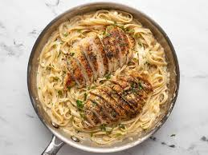

Chicken Alfredo

Description
This creamy Chicken Alfredo is a comforting dish made with tender chicken, pasta, and a rich, velvety Alfredo sauce. It’s a popular choice for a family dinner or special occasion.
The creamy sauce is made from butter, cream, and Parmesan cheese, making every bite smooth and indulgent.
Ingredients
- 2 boneless, skinless chicken breasts
- 12 ounces fettuccine pasta
- 1 tablespoon olive oil
- 1/2 cup unsalted butter
- 2 cups heavy cream
- 1 cup grated Parmesan cheese
- 2 cloves garlic, minced
- 1/2 teaspoon salt
- 1/4 teaspoon black pepper
- 2 tablespoons chopped parsley for garnish
Steps
- Cook the fettuccine pasta according to the package instructions and set aside.
- Heat olive oil in a large skillet over medium heat. Season the chicken breasts with salt and pepper, then cook until golden brown on both sides and cooked through. Slice the chicken into strips and set aside.
- In the same skillet, melt the butter over medium heat. Add garlic and cook until fragrant, about 1 minute.
- Pour in the heavy cream and bring to a simmer. Let it cook for 2-3 minutes, then stir in the Parmesan cheese until the sauce thickens.
- Add the cooked pasta and chicken to the sauce, tossing to coat the pasta evenly in the sauce.
- Serve with chopped parsley for garnish and enjoy!
Home